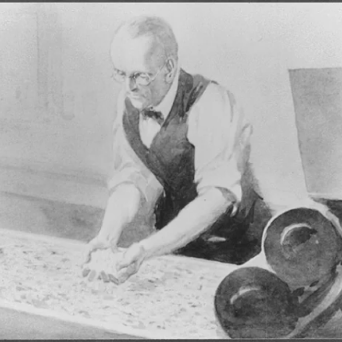
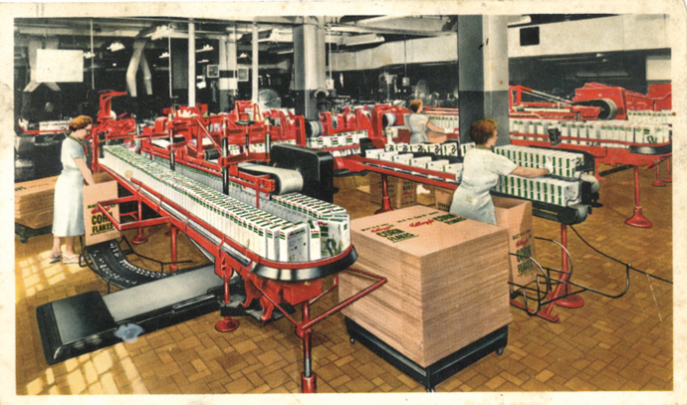

Our History
Inception
1906 - 1940

Driven by a vision to provide wholesome and convenient breakfast options, Will Keith Kellogg introduced the world to toasted corn flakes, revolutionizing the way people approached their morning meals.
1906 - 1940

As Kellogg's popularity soared, fueled by its commitment to delivering nutritious and delicious products, the company expanded its offerings beyond corn flakes.
1980 - Present
In the late 20th century, VKellogg's embarked on a journey of modernization and global expansion, propelled by advancements in technology and shifting consumer preferences.
Our Mission
To Bring You The Tastiest Breakfast and Meals
At VKellog’s, we are passionate about fueling your day with the most delicious and satisfying breakfast and meal options. We believe that every plate should be a celebration of flavor, quality, and creativity.
Meet Our Founders

Will Keith Kellog
Will Keith Kellogg (born William Keith Kellogg on April 7, 1860 – October 6, 1951) was an American industrialist and food manufacturer. He founded the Kellogg Company, which produces a wide variety of popular breakfast cereals. Kellogg began his career selling brooms in his hometown of Battle Creek, Michigan. Alongside his brother, John Harvey Kellogg, he promoted cereals, especially corn flakes, as a healthy breakfast food.
Their collaboration began at the Battle Creek Sanitarium, where John Harvey Kellogg was the superintendent. The brothers accidentally discovered the process of creating flaked cereal while experimenting with wheat. W.K. Kellogg saw the commercial potential of this discovery and focused on perfecting corn flakes, which led to the founding of the Battle Creek Toasted Corn Flake Company in 1906, later renamed Kellogg Company.
John Harvey Kellog
John Harvey Kellogg (February 26, 1852 – December 14, 1943) was an American medical doctor, nutritionist, and health reformer. He was a key figure in the development of the breakfast cereal industry and was instrumental in promoting health and wellness through diet and exercise.
Alongside his brother, Will Keith Kellogg, John Harvey Kellogg was involved in the development of flaked cereals. The discovery was made while experimenting with wheat, which led to the creation of corn flakes. Although initially used as a health food for the sanitarium's patients, the cereal's popularity grew, and it eventually became a commercial product under the Kellogg brand, though the brothers later parted ways in their business endeavors.